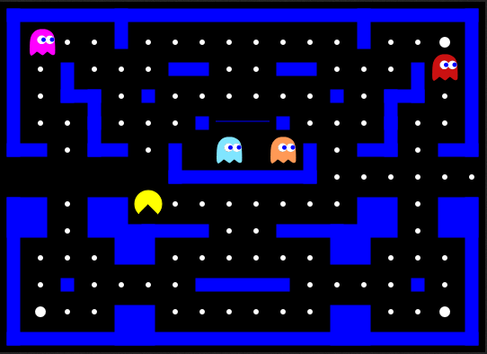
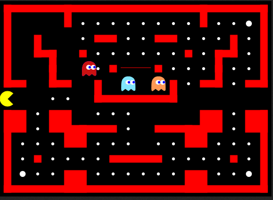
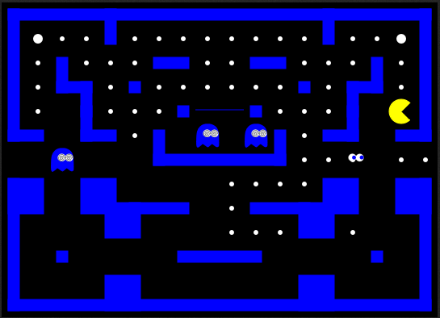

Altos Puntajes
Utilice sus teclas de flecha o [W,A,S,D] teclas para manejar Pacman.
To pause / resume the game press [SPACE] or [ESC] or just click into the game area.
Utilice gestos de deslizamiento para manejar Pacman.
Alternativamente, use los botones de flecha debajo del área del juego para manejar Pacman.
Para pausar / reanudar el juego, toque el área del juego una vez.
Los fantasmas son criaturas que cazan a Pacman y lo matarán si lo atrapan.
Cada fantasma tiene su propia estrategia para perseguir a Pacman.


Este es el estado de ánimo predeterminado. Cuando los fantasmas están de humor disperso, simplemente irán a la esquina de su hogar y se quedarán allí.
Después de un tiempo, los fantasmas cambian de humor y quieren ir a perseguir a Pacman. Esto se indica a través de las paredes que se vuelven rojas.
El objetivo de cada nivel es comerse todas las píldoras blancas sin ser atrapado por los fantasmas. Una pastilla da como resultado 10 puntos.
En cada nivel hay 4 píldoras de poder, que son un poco más grandes que las normales. Si Pacman se los come, se volverá lo suficientemente fuerte como para comerse a los fantasmas. Puedes ver esto indicado por los fantasmas que se vuelven azules. Una píldora de poder da como resultado 50 puntos.
Comer un fantasma da como resultado 100 puntos. El alma del fantasma regresará a la casa fantasma antes de comenzar a perseguir a Pacman nuevamente.
Versión actual: 0.91 (15.01.2016) (Obtener la última)
Pacman Canvas es de código abierto, escrito por platzh1rsch. Puede obtener el código en github.
Si tiene alguna sugerencia sobre cómo mejorar esta aplicación, publique su sugerencia / solicitud en uservoice.
Click para Jugar
This whole thing was written in HTML5, CSS3 and Javascript (using small bits of jquery). For the basics I was following the "Exploring HTML5 Canvas" Tutorials (Part 1 - 6) by Devhammer. Thanks for the great Tutorial!
For some other stuff, like how to write objectorientated javascript I was following the tutorials over at http://www.codecademy.com/, which is a really great site to learn Javascript and also other languages.
If you understand German you can also read my blogpost about this site: "Pacman in HTML5 Canvas".